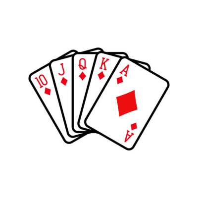

Ромб
Ромб - буквально сильнейший. Ромб с проведенными диагоналями внутри - очень выносливая структура. Когда строят мосты или здания, такую конструкцию часто используют.

Ромб - это бубен. Так он переводится с древнегреческого языка. Именно поэтому карточная масть "бубны" в форме ромба.